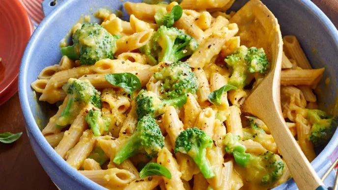

Butternut Squash Mac and Cheese

Description
This is a quick and healthy whole plant version of a mac and cheese.
It uses plant based milk and nutritional yeast for a cheesey flavour.
Ingredients
- 1 medium butternut squash (800 grams)
- 1 onion, finely chopped (1 cup)
- 4 cloves garlic, minced
- ½ teaspoon finely chopped fresh thyme
- 2 cups unsweetened, unflavored plant milk, such as almond, soy, cashew, or rice
- 2 tablespoons nutritional yeast
- 1 tablespoon white wine vinegar
- ¼ teaspoon sea salt
- ⅛ teaspoon freshly ground black pepper
- 3 cups dried whole grain penne pasta (225 grams)
- 3 cups small broccoli florets
- Fresh basil leaves
Steps
- Peel squash; halve squash and remove seeds. Cut squash into large pieces. Place squash pieces in a steamer basket in a large pan.
Add water to saucepan to just below basket. Bring to boiling. Steam, covered, about 12 minutes or until tender.
- Heat a large saucepan over medium. Add onion, garlic, thyme, and ¼ cup water to pan.
Cook about 10 minutes or until onion is tender, stirring occasionally and adding water,
1 to 2 Tbsp. at a time, as needed to prevent sticking.
- Transfer onion mixture to a blender. Add squash and the next five ingredients (through pepper).
Cover and blend until smooth. Pour squash mixture into a large saucepan.
- Cook pasta according to package directions, adding broccoli the last 5 minutes of cooking; drain.
Add drained pasta and broccoli to squash mixture; toss to coat. Serve warm topped with fresh basil.
Time taken: About 30 minutes
Back home